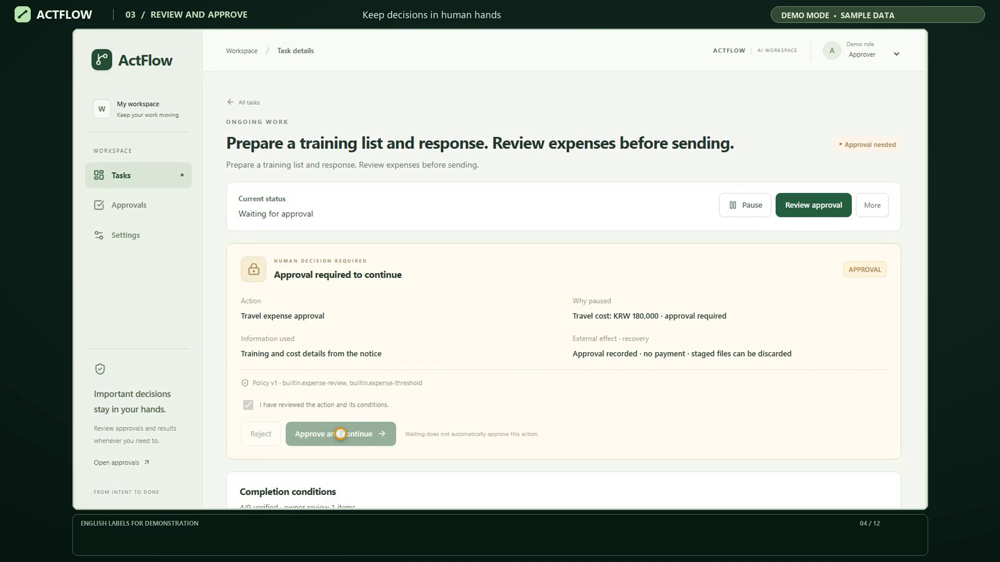

01↗
Start with a goal
Give ActFlow a task and the supporting context it needs.
Turn a goal into a clear sequence of actions, human decisions, and verifiable results.

01 / THE IDEA
Real tasks need context, decisions, and follow-through. ActFlow brings those steps together in a single workspace, so you can see what happens next and stay involved when it matters.
SEE IT IN ACTION ↗Give ActFlow a task and the supporting context it needs.
Review sensitive actions and approve or reject before continuing.
Inspect generated documents, verification, and the task timeline.
Return to a task, schedule follow-up, and confirm completion.
02 / THE DEMONSTRATION
One sample task, from the initial request to reviewed files and completion. Watch the full walkthrough or jump to a chapter.
03 / BUILT FOR FOLLOW-THROUGH
Explore the project, see how it works, and follow the source.
View on GitHub